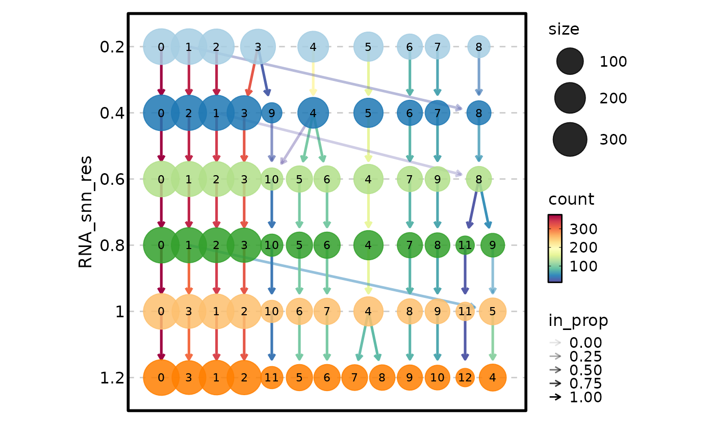

A clustree plot visualizes how cells move between clusters when clustering is performed at different resolutions. Each resolution level is a column of nodes, and edges show the flow of cells between clusters at adjacent resolutions. This is an essential diagnostic for single-cell analysis, helping researchers choose an appropriate clustering resolution by revealing which clusters are stable (persistent across resolutions) and which are transient (appear only at specific resolutions).
This function is a wrapper around plotthis::ClustreePlot()
that automatically extracts the metadata from Seurat objects. For data frames,
the data is passed directly to plotthis.
Arguments
- object
A Seurat object or a data frame. If a Seurat object is provided,
object@meta.datais extracted automatically and passed toplotthis::ClustreePlot(). If a data frame, it must contain columns with clustering assignments at different resolutions, identified by theprefixargument.- ...
Additional arguments passed to
plotthis::ClustreePlot(). Key arguments include:prefix(Required) A character string identifying the columns that contain cluster assignments. All columns starting with this prefix are used. For standard Seurat output, this is
"RNA_snn_res.".flipLogical. If
TRUE, flips the tree orientation. Default:FALSE.split_byColumn name(s) to split the data and generate separate clustree plots for each group. Default:
NULL.paletteColor palette for cluster nodes. Default:
"Paired".edge_paletteColor palette for edges (transitions). Default:
"Spectral".combineLogical. If
TRUE(default), combines multiple plots (whensplit_byis used) into a single patchwork object.themeTheme to apply. Default:
"theme_this".
Value
A ggplot object (or a patchwork object if split_by is
used and combine = TRUE), or a list of ggplot objects if
combine = FALSE. The plot shows clustering resolutions on the y-axis
(higher resolution = more clusters at the top) and individual clusters as
nodes connected by edges representing cell transitions.
Note
The
prefixargument is required — without it, no columns will be identified and the plot will be empty.For Seurat objects, clustering results are typically stored in
@meta.datawith names likeRNA_snn_res.0.4. The numeric suffix determines the ordering on the y-axis. Use the actual prefix from your Seurat object (e.g.,"SCT_snn_res."for SCT-based clustering).When
split_bygenerates many plots, usenrowandncolto control the layout, or setcombine = FALSEto receive a list for custom arrangement.For large datasets (>50,000 cells), consider subsampling to keep the plot readable. The edge rendering becomes dense as the number of cells increases.
Data requirements
Clustering results must be stored in columns of the metadata (for Seurat
objects) or the data frame. The columns are identified by a common prefix
passed to the prefix argument. For example, Seurat's
FindClusters() stores results in columns like RNA_snn_res.0.4,
RNA_snn_res.0.6, RNA_snn_res.0.8, etc. — the prefix
"RNA_snn_res." captures all of these. The numeric suffix is used to
order the resolution levels on the y-axis.
Interpreting a clustree plot
Stable clusters appear as nodes with predominantly single-color incoming edges (cells from one source cluster) and single-color outgoing edges (cells moving to one target cluster). These represent robust biological groupings.
Transient clusters show multi-color edges, indicating they arise from the splitting of multiple parent clusters or contribute to multiple child clusters — a sign of over-clustering.
Node size reflects the number of cells in the cluster at that resolution. Edge transparency reflects the proportion of cells following that path.
Choose a resolution where major clusters have stabilized (edges are predominantly single-color) before new clusters begin fragmenting.
Examples
# \donttest{
data(ifnb_sub)
ClustreePlot(ifnb_sub, prefix = "RNA_snn_res.")

# }